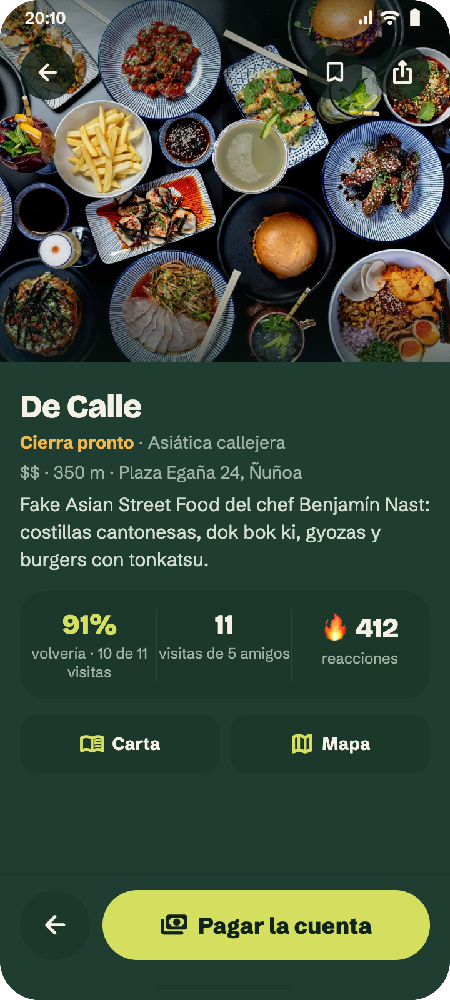
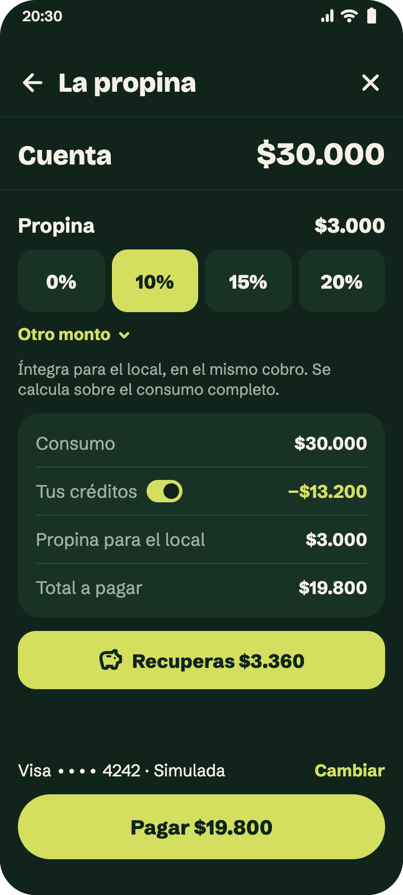
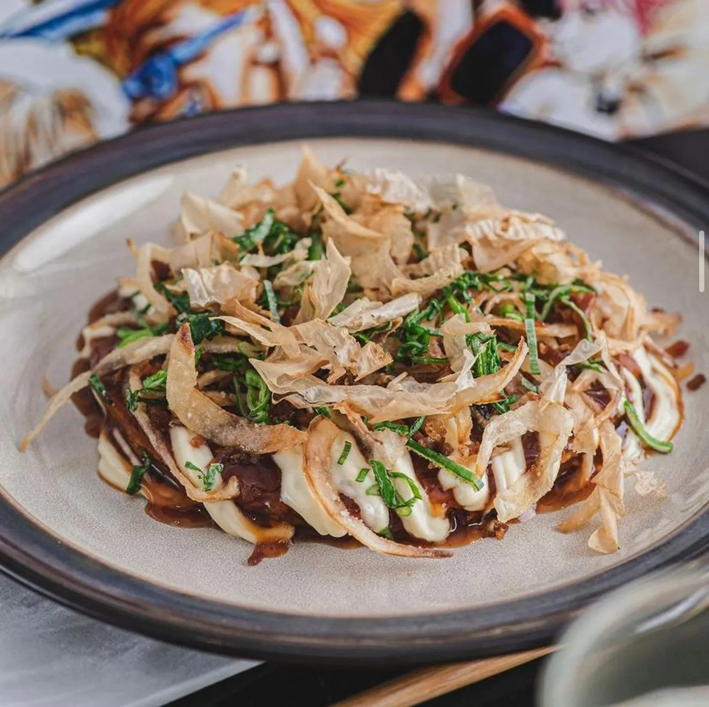

Entender el producto.
Qué hace Vamo’a, cómo se paga, cómo se recupera y qué se puede decir hoy.
Leer el productoProducto, identidad y pantallas en un lugar. La referencia para quien escribe, diseña y produce el contenido de Vamo’a.
Prelanzamiento · actualizado el 9 de octubre de 2026


Qué hace Vamo’a, cómo se paga, cómo se recupera y qué se puede decir hoy.
Leer el producto191 vistas y estados del comensal en la guía. El lienzo reúne 241 referencias de todos los roles, con búsqueda, enlaces y PNG descargables. Incluye la división de cuentas implementada, sujeta a habilitación.
Colores, tipografía, logos originales, fotografías y reglas para escribir y componer.
Ver identidad y recursosVamo’a permite descubrir restaurantes, revisar la cuenta de la mesa y pagar desde la app. Recuperas el 20% de lo que pagas por consumo como créditos para una próxima comida.
Elige dónde comer.Explora lugares, mapa, carta y lo que otras personas volverían a pedir.
Escribe tu cuenta.Elige el local e ingresa el número impreso. El monto llega de la caja; no lo escribe el cliente.
Revisa y paga.Ve el detalle, elige la propina y revisa créditos, tarjeta y total antes de confirmar.
Recupera para volver.Conserva el comprobante y lo que recuperaste. Después puedes contar qué volverías a pedir.
Los importes de estas pantallas son ilustrativos. Mantén el mismo ejemplo completo si lo llevas a una pieza.
$3.360 es el 20% de $16.800. La propina sugerida se calcula sobre $30.000, antes de usar créditos. Puedes cambiarla. La propina y los créditos usados no generan más créditos.
Ver la pantalla del ejemploVamo’a compra consumo por adelantado a los restaurantes. Cuando el comensal paga, ese consumo se aplica a su cuenta. Para el restaurante significa caja anticipada y una razón para que sus clientes vuelvan.
Los créditos del cliente son para futuras comidas: no se recargan, retiran ni transfieren como dinero. Tampoco pagan la propina.
La bienvenida configurada es de $10.000 para una cuenta de consumo desde $20.000, una vez confirmado el correo y sujeto a elegibilidad.
Se usa una vez, vence en 60 días y puede cubrir hasta el 50% del consumo. Una cuenta bajo el mínimo no consume el regalo.
En una pieza que mencione la bienvenida, las condiciones y las bases deben acompañar la cifra. El regalo no se entrega por anotarse en la lista de espera.
El producto está en pruebas. El llamado a la acción actual es la lista de espera, mientras se completan las integraciones y la puesta en marcha.
El sitio usa superficies crema; la app usa bosque profundo. Ambos comparten tipografía, el pin coral, controles redondeados y acentos lima. El wordmark conserva su dibujo original.
Formas expresivas, títulos breves y aire alrededor. Evita apretar el texto para llenar el cuadro.
Escribe el número de tu cuenta.
Revisa el detalle. Elige la propina.
Texto legible y directo; cifras fáciles de comparar. El logotipo usa Space Grotesk Bold, incorporada en el SVG: no lo recompongas con la fuente de los títulos.
Usa los archivos originales, sin deformar, cambiar el dibujo ni agregar contornos. Deja alrededor al menos la mitad del ancho de la cabeza del pin. El logotipo completo firma las piezas; el isotipo funciona donde el nombre ya está presente.
Comida, lugar y detalles reales dan contexto. La interfaz se muestra con las pantallas del documento, conservando sus cifras y textos. No recrees una app distinta dentro de una imagen generada.



Estas fotos son referencias del producto. La autorización para usarlas en campañas debe confirmarse con el restaurante. Las imágenes de ambiente generadas para la landing son ilustraciones; no presentarlas como fotos de un socio. En la página Restaurantes, Octubre y sus indicadores son ejemplos de diseño.
Las cuatro páginas públicas conservan el rediseño. Ábrelas para recorrer composición, contenido y comportamiento, incluido “Cómo funciona”.
Presentación de la propuesta, lista de espera y recorrido de una cuenta.
Detalle para el comensal: lugares, recuperación de créditos, bienvenida y preguntas.
La propuesta para el local, puesta en marcha y ejemplo de seguimiento del consumo.
Entrada para clientes, restaurantes y otras consultas.
Usa estos briefs como punto de partida en tu herramienta de video o diseño, con el producto y la marca como referencia.
Objetivo: lista de espera de Vamo’a. Idea: la salida parte por el antojo. Abrir con comida y ambiente; mostrar la ficha del lugar y el recorrido cuenta → detalle → pago → recuperado. Usar fotos autorizadas y capturas del diseño, sin inventar interfaces. Mensaje: “Elige el lugar, no la promoción”. El ejemplo de pago conserva $30.000 de consumo, −$13.200 de créditos, +$3.000 de propina, $19.800 cobrados y $3.360 recuperados. Cerrar con Vamo’a y “Súmate a la lista de espera”.
Objetivo: explicar el 20% recuperado. Mostrar una cuenta legible, sin cambiar sus importes. Explicar que se recupera el 20% del consumo pagado para usar en otra comida; créditos usados y propina quedan fuera. Componer con bosque, crema, lima y coral, títulos Bricolage y cuerpo Schibsted. Usar los PNG de la app como interfaz. No decir “20% de descuento hoy”, dinero retirable ni premio por invitar. CTA de prelanzamiento: lista de espera.
Busca la vista en App, ábrela sola y descarga su PNG. El enlace de cada lámina se puede compartir para señalar exactamente qué usar. Puedes combinar la captura con fotografías, video y texto editorial; conserva el contenido de la pantalla sin pedirle a un generador que lo redibuje.
Para Higgsfield u otra herramienta, usa el brief, los recursos de marca y material autorizado como referencias. Si genera ambiente o movimiento, añade la interfaz fiel en la composición final.
Las capturas son del diseño. Sirven para producir piezas conceptuales; no acreditan una app publicada ni reemplazan capturas reales de la app para App Store o Google Play.